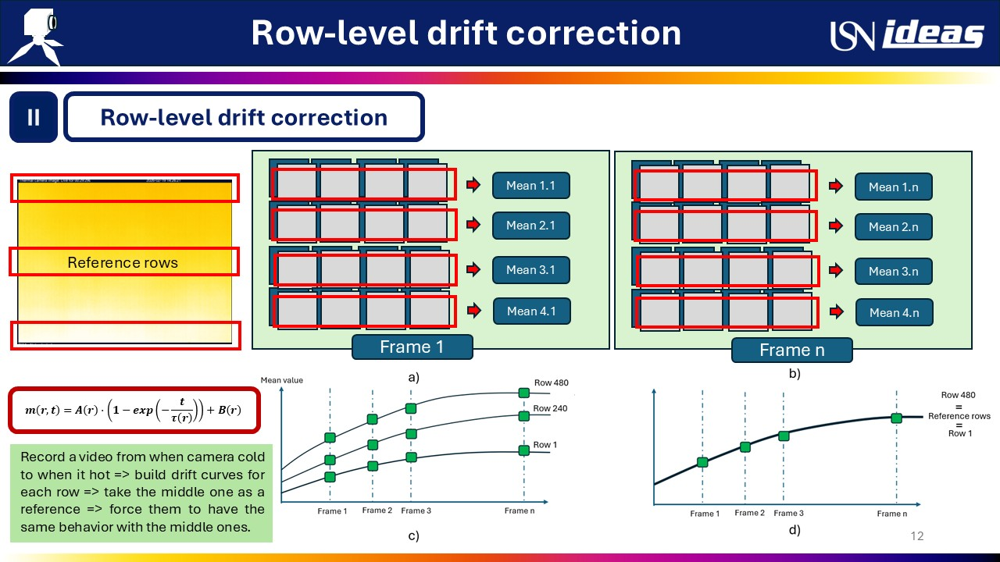

Embedded calibration storage and drift correction for an uncooled microbolometer
IDEAS, Oslo · 2026
Uncooled microbolometer arrays self-heat, so their output drifts. I addressed this on one camera through two separate methods.
- Drift correction. With no temperature sensor on the focal plane, I modelled per-row drift as an exponential in warm-up time and corrected it offline on the host.
- Calibration storage, in firmware. On the Zynq-7000 I brought up the on-module eMMC, wrote an FTP service, and built a temperature-indexed lookup table that applies a per-pixel calibration inside the camera, independent of the host.
Project write-up (PDF) Shared with permission from IDEAS · code not public
